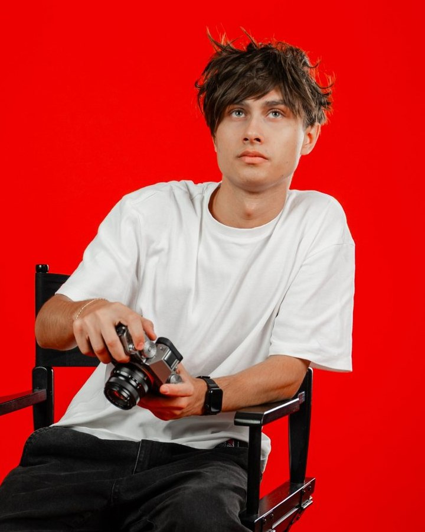
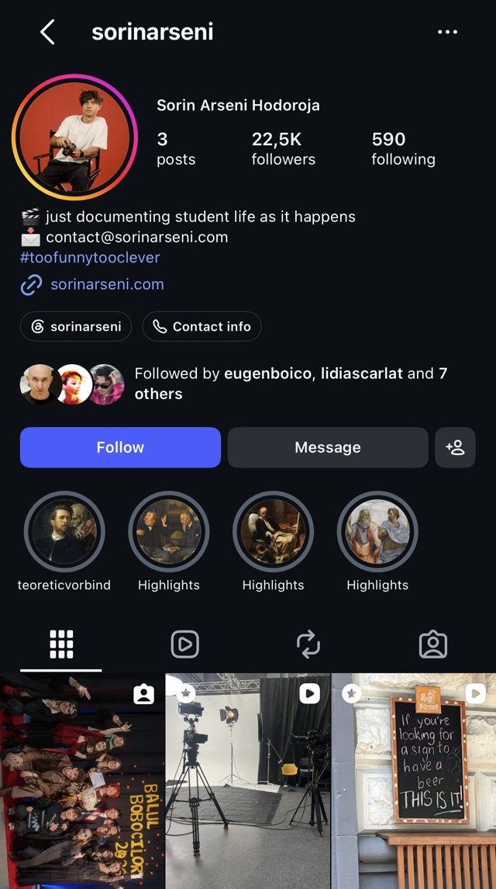

USM · FJȘC · Producție Multimedia · Ciclul I, Licență
Colocviul științific „Coduri și limbaje actuale ale imaginarului”
Creativitatea & imaginarul
în elaborarea unui portofoliu de creație multimedia: de la concept la realizare
Sorin Arseni HodorojaAnul I · Producție Multimedia
?Cum îmi făceam prezentările până acum?
Bună ziua! Înainte să mă prezint, vă rog să ridicați mâna: cine a folosit vreodată PowerPoint ca să facă prezentări?
✋ după fiecare întrebare, așteaptă mâinile
Și cine folosește PowerPoint pentru prezentări și astăzi?
Acum: cine a folosit vreodată Canva ca să facă prezentări?
Și cine face prezentări în Canva și astăzi?
Și eu am fost în toate cele patru grupe. Până anul acesta. De aici începe prezentarea mea.
Mă numesc Sorin Arseni Hodoroja, Anul I, Producție Multimedia. Tema mea: creativitatea și imaginarul în elaborarea unui portofoliu de creație multimedia.
→ slide-ul cu Canva
01 · De unde am pornit
Din Canva, pe propriul site
Până acum îmi făceam prezentările în Canva. Din acest semestru le construiesc pe site-ul meu, ca la finalul anului să am un portofoliu de prezentări și proiecte studențești.
6 prezentări, același șablon
Fiecare proiect are paleta, fontul și „jucăriile” lui.
?Dar ce înseamnă, de fapt, multimedia?
Până acum îmi făceam prezentările în Canva, ca toată lumea: alegi un șablon și pui textul. Problema e că șase prezentări ajung să arate la fel.
👆 apasă „↻ alt șablon”, apoi tabul „Site-ul meu”
Din semestrul ăsta le fac pe site-ul meu: fiecare proiect cu designul lui, iar la final de an am un portofoliu întreg.
→ „Ca să explic de ce, am nevoie de trei noțiuni. Prima: multimedia.”
02 · Teorie 1 din 3
Ce este multimedia?
Multimedia este o sinergie a diferitor forme de conținut (text, imagine, sunet, animație, video și interacțiune) integrate într-un singur produs sau experiență.
Laura Tugarev, USM · Specialitatea Producție multimedia: o inovație în peisajul educațional universitar din RM
Orice combinație de text, grafică, sunet, animație și video livrată prin computer. Devine interactivă când utilizatorul decide ce vede și când.
Tay Vaughan · Multimedia: Making It Work (1993)
?Ce face un produs multimedia să fie creativ?
Multimedia înseamnă mai multe tipuri de conținut, text, imagine, sunet, animație, video și interacțiune, puse într-un singur produs. Laura Tugarev îi spune „sinergie”.
Tay Vaughan adaugă ceva important: devine interactivă când tu decizi ce vezi și când.
👆 apasă pe cele 6 ingrediente, unul câte unul
→ „Bun, dar când e multimedia și creativă?”
03 · Teorie 2 din 3
Creativitate și imaginar
Creativitatea este capacitatea de a produce ceva nou (original, neașteptat) și adecvat (util, potrivit sarcinii).
Handbook of Creativity, Cambridge University Press
Idei noi, surprinzătoare și valoroase. Apar în trei feluri:
Le pun împreună. Lucruri care există deja, legate într-un fel nou.
The Creative Mind: Myths and Mechanisms
Imaginarul este ansamblul imaginilor și al legăturilor dintre ele: rezerva din care pornește orice creație.
Structurile antropologice ale imaginarului (trad. rom. 1977)
Pe scurt: imaginarul îmi dă imaginea, creativitatea o face nouă și utilă.
?Unde pui tot ce creezi?
După Sternberg și Lubart, ceva e creativ dacă e nou și, în același timp, util. Nu ajunge să fie doar ciudat.
Margaret Boden spune că ideile noi apar în trei feluri: combini lucruri, explorezi limitele sau schimbi regulile. Iar imaginarul, la Durand, e rezerva de imagini din care pornești.
👆 apasă cele 3 taburi de la Boden
→ „Și dacă tot creăm, unde punem ce creăm?”
04 · Teorie 3 din 3
Portofoliul digital multimedia
O colecție cu scop a lucrărilor tale, care arată efortul, progresul și realizările.
What Makes a Portfolio a Portfolio? · Educational Leadership
Tehnologia te ajută să aduni lucrări în multe formate: audio, video, grafică, text. Nu e o arhivă la întâmplare, ci arată cum crești.
Create Your Own Electronic Portfolio · Learning & Leading with Technology
Pus pe un site, te ajută să-ți organizezi lucrările și să alegi cine le vede.
An Overview of E-Portfolios · EDUCAUSE
- colectezi
- selectezi
- reflectezi
- prezinți
?Și cum arată asta la mine?
Un portofoliu nu e un dosar cu tot ce ai făcut. E o selecție cu scop, care arată cum ai crescut (Paulson, 1991).
Varianta digitală, spune Helen Barrett, adună video, poze, sunet, text într-un singur loc. Iar pus pe un site, alegi și cine îl vede (Lorenzo și Ittelson).
👆 apasă pe cele 5 fișiere, să intre în portofoliu
→ „Atât cu teoria. Hai să vă arăt cum arată la mine, pe site.”
05 · Cine sunt
Între cod și cadru
Creator digital. Am venit în multimedia din IT și încerc să îmbin cele două lumi.
-
 Computer Science · absolventCentrul de Excelență în Informatică și Tehnologii Informaționale
Computer Science · absolventCentrul de Excelență în Informatică și Tehnologii Informaționale -
 Editor videoLa PRASADA: Just cu Gust și Gust Academy, montaj și idei pentru rețelele sociale
Editor videoLa PRASADA: Just cu Gust și Gust Academy, montaj și idei pentru rețelele sociale -
Student, anul I · Producție MultimediaFacultatea de Jurnalism și Științe ale Comunicării, USM

?De ce am ales tocmai multimedia?
Pe scurt despre mine: am terminat Computer Science la CEITI, lucrez ca editor video la PRASADA, pe Just cu Gust și Gust Academy, iar acum sunt în anul I la Producție Multimedia.
→ „De ce am ales tocmai multimedia?”
06 · De ce multimedia
Ocol sau upgrade?
Urmăresc Mediacor și programul Profesiile Viitorului de la înființare. Din anul în care am aplicat la IT știam că, după absolvire, merg mai departe în multimedia.
UPGRADE ✓- ColegiuAplic la IT, la CEITI: programare, web
- PracticăPrimele site-uri și primele colaborări mari: HTML, CSS, JS, PHP, Laravel
- MuncăEditor video la PRASADA
- 2021Se deschide Mediacor, centrul de producție digital-media al USM
- 2022Apare Producție multimedia, prin programul Profesiile Viitorului
- 2026 · aiciAnul I, FJȘC: codul și montajul, într-o singură specialitate
?Ce iese când pui la un loc codul și montajul?
Mulți cred că din IT în multimedia e un ocol. Pentru mine e un upgrade: urmăresc Mediacor și Profesiile Viitorului de când au apărut și știam de la început că ajung aici.
👆 apasă butonul „ocol / upgrade”
→ „Și ce iese când pui codul lângă montaj?”
07 · Creativitatea în multimedia
Combinația e creația
Multimedia e combinațională prin natura ei: pune împreună, într-un mod nou, lucruri care există deja. Rețeta mea:
?Cum a început totul?
Creativitatea mea e exact ce spunea Boden: combinație. Pun la un loc codul din IT, montajul de la muncă, designul și o poveste.
Rezultatul nu e un fișier, ci o prezentare-site, un produs multimedia în sine.
👆 apasă cele 4 ingrediente
→ „Totul a pornit de la un singur proiect.”
08 · De la concept
Totul a pornit de la bau BAU
Un singur proiect, la Managementul Experienței: YUTUBAU, un Bau Bau vlogger pentru cardurile de colecție Electric Spring. În loc de slide-uri, am construit un site. Mecanica lui a devenit baza întregului portofoliu.

?Din ce e făcută o astfel de prezentare?
Totul a pornit de la un singur proiect: YUTUBAU, un Bau Bau vlogger pentru cardurile Electric Spring. În loc de slide-uri, am făcut un site.
Mi-a plăcut atât de mult încât toate proiectele de după au pornit de la el.
👆 mișcă mouse-ul peste card
→ „Din ce e făcută o astfel de prezentare?”
09 · Componentele paginii
Anatomia unei prezentări
- Indexul de proiecte. Pagina de acasă, cu câte un card pentru fiecare proiect.
- Bara de sus. Înapoi, cronometrul REC și secțiunile.
- Slide pe tot ecranul. Se oprește singur la scroll; textul intră pe rând, ca într-un montaj.
- Contorul de slide-uri. Arată unde ești și te duce oriunde.
- Identitate proprie. Fiecare proiect are paleta, fontul și „jucăriile” lui: sunet, quiz, parolă.
- Finalul. De la început, share cu link și PDF.
?Cum am ajuns la ideea asta?
Fiecare prezentare are aceleași 6 piese: pagina de proiecte, bara de sus cu cronometrul, slide-urile pe tot ecranul, contorul, identitatea proprie și finalul cu link și PDF.
👆 apasă cifrele 1–6 de pe fereastră
→ „Cum am ajuns la ideea asta? Prin patru etape.”
10 · Procesul creativ
Patru etape
Modelul lui Graham Wallas, The Art of Thought (1926), studiat la cursul Gândire și scriere creativă.
Problema e cercetată din toate direcțiile.
Tema: un card Bau Bau pentru Electric Spring. Studiez YouTube, festivalul, prezentările colegilor.
Nu te mai gândești conștient, mintea combină în fundal.
Las tema deoparte, montez la muncă. Rămâne o întrebare: de ce arată toate prezentările la fel?
Apare brusc ideea bună, momentul „aha”.
Prezentarea poate fi un site: slide cu slide, cu bara REC ca într-o cameră de filmat.
Ideea e testată și adusă la forma finală.
Construiesc, testez pe proiector și telefon, prezint, primesc feedback.
↻ verificarea devine pregătirea proiectului următor
?Ce a ieșit din acest proces?
Ideea n-a venit dintr-odată. Am trecut prin cele 4 etape ale lui Wallas: pregătire, incubație, iluminare și verificare.
Momentul „aha” a fost la etapa 3: prezentarea poate fi un site.
👆 apasă „teorie / la mine” ca să vezi ce a fost la mine
→ „Ce a ieșit din proces?”
11 · La realizare
Un proiect a devenit portofoliu
public deschise oricui parolă pentru colegi și profesori: lucrări cu actori reali sau încă în lucru
?Este acest portofoliu cu adevărat creativ?
Dintr-un singur proiect a ieșit un portofoliu: șapte prezentări, fiecare cu designul ei, plus clipurile și site-urile mele.
Unele sunt publice, altele au parolă, exact cum spuneau Lorenzo și Ittelson: tu alegi cine vede.
click pe un proiect îl deschide într-un tab nou (doar dacă te întreabă)
→ „E creativ cu adevărat? Hai să verificăm.”
12 · Verificarea
Nou și adecvat?
Trec portofoliul prin definiția lui Sternberg și Lubart: un produs creativ trebuie să fie și nou, și util.
?Ce iau cu mine din toate acestea?
Revin la definiția de la început: creativ înseamnă nou și util. Nou: prezentări-site, fiecare cu altă identitate. Util: merge pe orice ecran și se trimite cu un link.
👆 bifează cele 6 căsuțe, la final apare ștampila
→ „Și asta mă aduce la concluzie.”
13 · Concluzia
Toată lumea ar trebui să aibă un portofoliu digital
- Arată cum crești, nu doar ce ai terminat. Un proiect bun e și mai bun lângă cele de dinainte.
- Un link în loc de 20 de fișiere. Pentru profesori, colegi, angajatori, festivaluri.
- Combinația e creația. Ce știi din alte domenii devine materie primă.
- Nu trebuie să știi totul de la început. Începi cu un singur proiect și înveți pe drum.
?Unde mă găsiți?
De aceea cred că toată lumea ar trebui să aibă un portofoliu digital. Nu ca să te lauzi, ci ca să se vadă cum crești.
E un singur link în loc de 20 de fișiere, iar ce știi din alte domenii devine materie primă. Și nu trebuie să știi totul de la început: începeți cu un singur proiect.
Al meu e aici: scanați codul și intrați pe university.sorinarseni.com.
→ final
Mulțumesc!
pentru atenție.

Mulțumesc pentru atenție!
Dacă vreți să ținem legătura, pentru colaborări sau networking, urmăriți-mă pe Instagram: @sorinarseni. Scanați codul.
prezentarea se poate descărca în PDF de aici